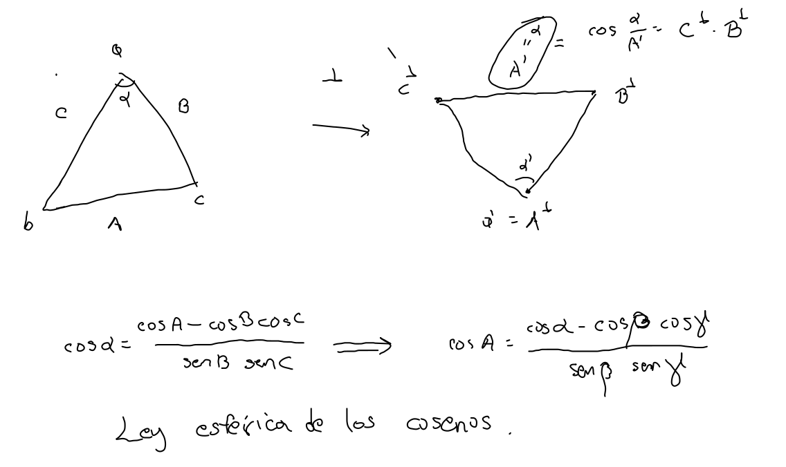
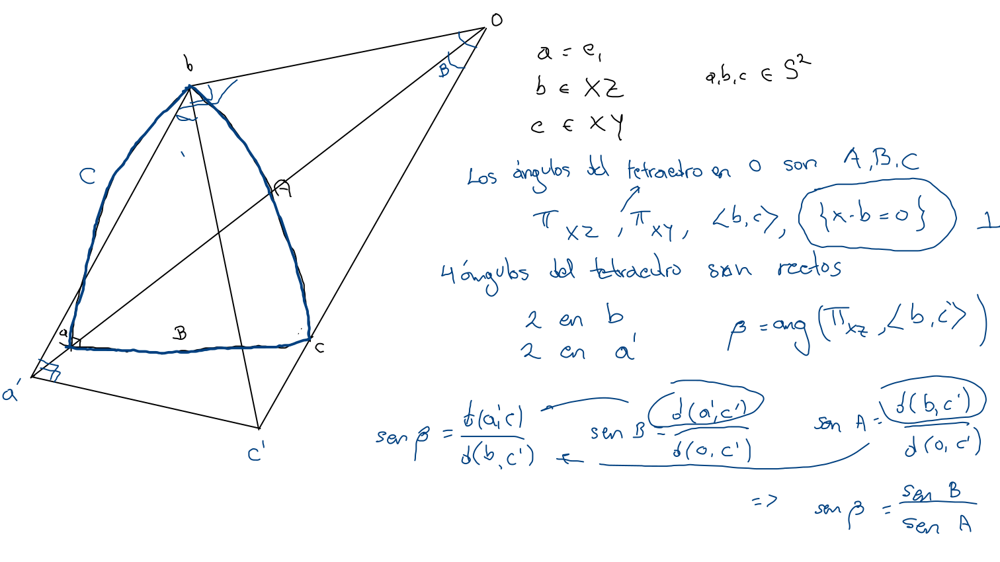
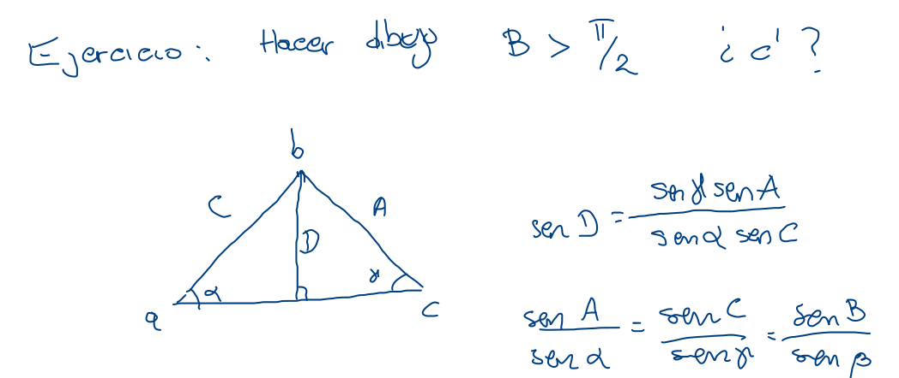
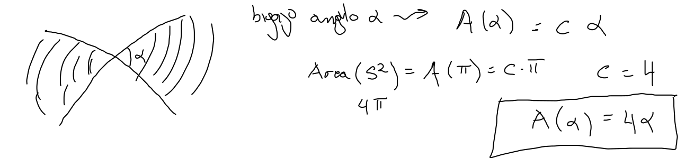
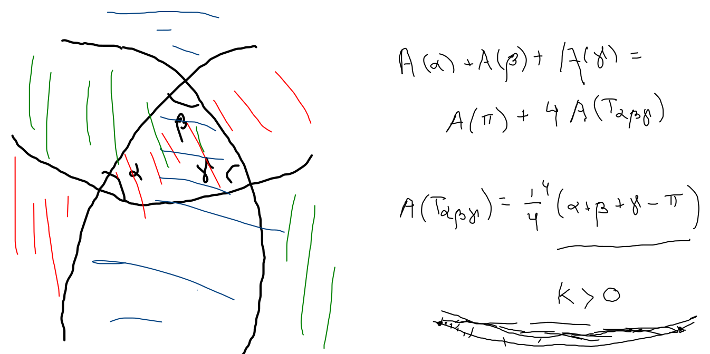

Área
Ley esférica de los cosenos (cont.)
Triángulo polar

cosA=sinβsinγcosα+cosβcosγ
Ley esférica de los senos
Triángulo esférico
- Caso particular α=2π:

sinβ=sinAsinB.
- Ejercicio: encontrar c′ cuando B≥2π.
- Caso general:

sinαsinA=sinγsinC.
Área de un triángulo.
- Bi-gajo

A(α)=4α.
- Exceso de la suma

A(Tαβγ)=α+β+γ−π.